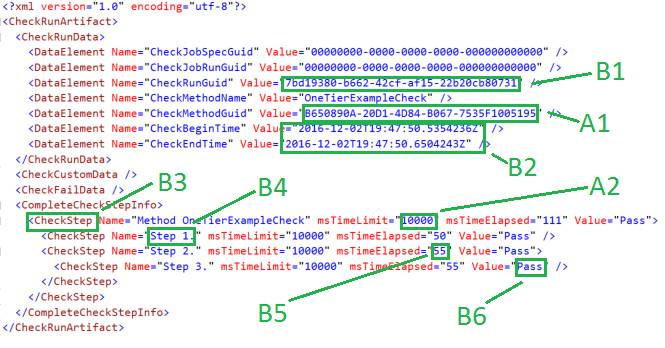

MetaAutomation Sample 1
Installation and Tutorials
Contents
Installing the Integrated Development Environment (IDE)
Getting the MetaAutomation Sample 1 Solution
Selecting Other Checks in the Sample
Enabling the Different Check Examples in the Map File
Iterative Runs for Test and Debugging
The XML and the C# Source Code
More Detail on The Data-Driven Aspects of the Checks
A. Entries in the XML artifact that drive the check
B. Entries that are determined by the check code and the engine during a check run
The MetaAutomation Sample 1 is a Visual Studio solution developed with Microsoft Visual Studio Community 2017. It contains 6 projects and several folders of other important files.
Microsoft Visual Studio Community 2017 is free to download, use and install from https://www.visualstudio.com/downloads/ .
This document concerns setup and run of the sample as downloaded, including the 2 example checks included in the sample.
MetaAutomation Sample 1 runs checks and check components in a single process.
Other samples on the MetaAutomation.net web site offer additional and more sophisticated capabilities:
· MetaAutomation Sample 2 runs components of multi-process checks on the same machine, which is useful e.g. for measuring or instrumenting operating system services or running checks in parallel on the same machine.
All the MetaAutomation samples demonstrate checks with
· self-documenting, hierarchical check steps that show pass, fail, or blocked
· pure, compact, descriptive check artifacts in a schema-defined grammar of XML
… and other cool stuff discussed in the book.
For more information and diagrams on how this system works, to customize the checks or adapt the infrastructure, and more on how this implements the Hierarchical Steps and Atomic Check patterns and works in the bigger setting of the MetaAutomation pattern language, please see the site http://MetaAutomation.net and the latest book on MetaAutomation.
If you do not have a version of Visual Studio 2017, install the latest free version:
1. Browse to this page https://www.visualstudio.com/downloads/
2. Select the download for “Visual Studio Community 2017” or a newer version
3. Verify that it is published by Microsoft, and Select “Run”
4. Depending on choices in the installer, choose the “Typical” installation, or select these components:
a. .Net core cross-platform
b. Visual Studio extension development
c. .Net desktop development
5. Proceed with the installation
The MetaAutomation Sample 1 is available as a zipfile download from GitHub, but the easiest way to find it is here:
1. Open the solution “MetaAutomationSample1.sln” in Visual Studio 2017
2. Add Visual Studio features as needed
3. Verify that the active solution configuration is “Debug”
4. Explicitly build the entire solution of 6 projects. NOTE due to a build issue with VS, this step is not optional and may have to be repeated to ensure that CheckProcess.exe is correctly built or rebuilt.
5. Verify that the startup project is “CheckLauncher,” or set it as startup project
6. F5 to run the first check of the sample, out of two checks.
7. From a file explorer, look from the project location under the “Artifacts” directory and below the directory for Example 1. Verify that the sample check ran and completed by looking for a new artifact file that was created.
CheckLauncher is a command-line application that will show status information on the check run. This EXE is expected to succeed, whether the check passes. Otherwise, there is a configuration issue. See the Troubleshooting section below for some ideas of how to resolve issues.
The first example check of the sample is the only one that is enabled in the MetaAutomation Sample 1 as downloaded.
For the results of the check, see the file CheckMap.xml in the Artifacts directory in the file location where you are running the MetaAutomation Sample 1 solution. This file now points to the new artifact file in the file system. Open it in your favorite text / XML editor and check it out.
This file will be used to run the same check, for the next run of that check.
The other checks listed in the CheckMap.xml file work the same way.
In Visual Studio, see the file directory “Artifacts” for the file “CheckMap.xml.” This file contains the map that CheckLauncher uses to find the artifact files that are needed to tell the system how to run the check. Note that if a check runs to completion, a new artifact file for the check is created, and the map is updated to point to that file.
The artifact files called “CheckRunArtifact_<GUID>.xml” do double-duty in this system; each file is a result of a check run and is needed to run the check next time. This is how the check knows what check steps are expected as part of the check, and how the check steps can get updated if necessary. This file also defines time limits for each step, which determine when a check step will time out, due to e.g. external dependency failure.
The map file determines which of the example checks are run. Each Check element in the XML corresponds to an artifact XML file which includes
· The results of the last check run, including the time it took to run each check step in milliseconds
· Check steps information, for use with the next run of the same check
· Some information needed to run the check
In the file CheckMap.xml, as downloaded, only one Check element is not commented out in the distributed version of the project:
<Check>
<DataElement Name="DirectoryName" Value="Example_1_SimpleOneTierCheck" />
<DataElement Name="CurrentCheckRunArtifact" Value="CheckRunArtifact_Original.xml" />
<DataElement Name="Comment" Value="Example 1: Simple one-tier check" />
</Check>
This instructs the engine to load the file called CheckRunArtifact_Original.xml in the relative directory Sample_1_SimpleOneTierCheck, and run a check starting with that CheckRunArtifact XML file. On completion of the check run, whether the check itself results in a PASS or a FAIL, the XML element here will be updated to point to the new artifact file.
Each un-commented “Check” element in the map file is enabled and will run a different example check. For Sample 1, all the enabled example checks will run in sequence in the same process on the machine on launch of the CheckLauncher.exe executable.
This Example check is enabled by default. To disable it, comment out the “Check” element in XML in the map file that represents this check.
This simple check does a minimal demonstration of self-documenting, hierarchical check steps.
Un-comment the “Check” element in the map file for Example_2_CheckOfWebPageBuiltToFailRandomly to enable this check.
For example, the CheckMap.xml file as downloaded, in the Artifacts directory of the solution, might look like this:
<?xml version="1.0" encoding="utf-8"?>
<Checks>
<Check>
<DataElement Name="DirectoryName" Value="Example_1_SimpleOneTierCheck" />
<DataElement Name="CurrentCheckRunArtifact" Value="CheckRunArtifact_Original.xml" />
<DataElement Name="Comment" Value="Sample 1: Simple one-tier check" />
</Check>
<!--Check>
<DataElement Name="DirectoryName" Value="Example_2_CheckOfWebPageBuiltToFailRandomly" />
<DataElement Name="CurrentCheckRunArtifact" Value="CheckRunArtifact_Original.xml" />
<DataElement Name="Comment" Value="Sample 2: Check of web page built to fail randomly" />
</Check-->
</Checks>
To comment out the example 1 and enable the comment 2, edit the file to look like this and save it:
<?xml version="1.0" encoding="utf-8"?>
<Checks>
<!--Check>
<DataElement Name="DirectoryName" Value="Example_1_SimpleOneTierCheck" />
<DataElement Name="CurrentCheckRunArtifact" Value="CheckRunArtifact_Original.xml" />
<DataElement Name="Comment" Value="Sample 1: Simple one-tier check" />
</Check-->
<Check>
<DataElement Name="DirectoryName" Value="Example_2_CheckOfWebPageBuiltToFailRandomly" />
<DataElement Name="CurrentCheckRunArtifact" Value="CheckRunArtifact_Original.xml" />
<DataElement Name="Comment" Value="Sample 2: Check of web page built to fail randomly" />
</Check>
</Checks>
This check requests and measures a page of the MetaAutomation.net web site, but the page is deliberately built to fail 80% of the time. There are 5 pseudo-randomly selected behaviors of this page, based on the time of page request. Only one behavior passes the check, and the others fail, to demonstrate how a check can report the failure.
In the CheckLauncher project, class LaunchAsynchronousChecks, see the local variable
const int IterateCount = 1;
This determines how many times the checks referenced in the file CheckMap.xml are run. To start out, just leave this as 1. Setting it to a higher number is a useful tool for debugging.
Look in the directory where you edited the file CheckRunArtifact_Original.xml. There is now a new file called CheckRunArtifact_<GUID>.xml. Open this file to see the result of the run.
The file CheckMap.xml now points to this file and does not know about the CheckRunArtifact.Original.xml anymore. To make changes to the check run, edit the new file; it is the new reference for the sample implementation to run the check.
Open the new artifact file, and in project CheckMethods, open the class (in the file of the same name) that corresponds to the example check that was run.
In the artifact file, as a child of the CheckRunData element, note that there is one DataElement element with name attribute “CheckMethodGuid.” Look in the C# code to find this GUID in a CheckMethodAttribute instance for a C# method.
The artifact XML determines where to find the executable to run the checks, what methods to run, and other things, as well as holds all the information from the prior check run including the steps.
The C# methods follow a pattern of the xUnit testing tools. The code determines what is done at the code level, including method and step names. From here, the SDET would load, exercise, and measure output from the product, all in self-documenting check steps.
To see how self-documenting steps reflect themselves in check results, compare the artifact with the C# code step names. This gets more complex with the more elaborate example checks, as seen in the MetaAutomation Sample 2 and Sample 3.
Here is the form of the XML artifact from example check 1 from MetaAutomation Sample 1, which shows a trivially basic check limited, as is the sample, to just one process. The text in various shades of red and blue are as seen in the Visual Studio text editor, with default colorization settings, and the green annotations are added to this graphic to correspond to the below notes:

For this sample implementation, these values are set by editing the XML with a text editor, if they need to be set or changed.
For an adapted or more complete implementation of the patterns of MetaAutomation, these values might be set by the automation infrastructure outside of the scope of the actual check runs.
This GUID determines the method in the CheckMethods assembly that is executed to begin the check. In C# code, the GUID is set with the CheckMethodAttribute class of the MetaAutomationClientSpLibrary.
These values determine the timeout for a check step, including all child steps that run as part of that step.
This value is set for any existing check step for a check. If the check steps change or are initialized at first run of a given check, the msTimeLimit will default to the value determined by the MetaAutomation libraries (currently 30,000 milliseconds i.e. 30 seconds).
For check steps that do not change as a result of the check run, the msTimeLimit attribute values will persist to the next check run in the XML.
See entry B3 below for more information on the lifecycle of the CheckStep elements.
This uniquely describes a run of a check.
These values are determined by the run of the check.
CheckStep elements describe the step hierarchy of a repeatable check.
Before the first run of a given check, the element CompleteCheckStepInfo would have no child elements at all. The artifact that results from the check run will show the CheckStep elements to reflect the steps of the check, following from the code and other elements of the check.
If the steps of a check change, that is detected by the engine during the first run of the check in which the changed steps occur, and the new or changed steps are reflected in the artifact of the check run.
The name of the check step is determined by the C# code. The names are hard-coded and therefore stable and unchanging, the better to support analysis on the data that is created by the check runs.
The elapsed time is determined by the check run. The time includes the running time for all child steps as well.
These values describe the result of a given step in the check run: Pass, Fail, or Blocked.
A result of “Fail” for a given check step propagates up through ancestor steps.
A result of “Blocked” means that the check step was not executed at all due to an earlier failure.
If the checks go on until they time out, verify that the executable “CheckProcess” built successfully. A complete solution rebuild might be required.
If the debugging session continues for more than 10 seconds while the console window continues to report queries for the results for the process, try setting breakpoints in the check implementation code and re-running to examine the runtime behavior.
You can also ask for help on the LinkedIn group MetaAutomation, at https://www.linkedin.com/groups/13563753 .